Unofficial study solution; not an official GTU answer key. Answers have not been independently verified. English text reflows; source equations, diagrams and Gujarati retain their original appearance. Use Enlarge image to inspect them.
આ બિનસત્તાવાર અભ્યાસ ઉકેલ છે, સત્તાવાર GTU જવાબવહી નથી. PDF માંથી ગુજરાતી લખાણ સાચું નીકળતું નથી, તેથી દરેક જવાબ મૂળ ચિત્રરૂપે જાળવ્યો છે. વાંચવા માટે ચિત્ર મોટું કરો. મૂળ પ્રશ્ન અને પરીક્ષાના વિકલ્પોની સૂચનાઓ અનુસરો.
Coverage: all 28 printed parts, including every OR alternative, are answered in English and easy Gujarati. The paper is 70 marks; OR alternatives do not add marks.
Questions: the paper declares its English version authentic. English questions are reproduced with line breaks and spaces normalised; Gujarati question meanings are unofficial study aids.
Reading the answers: diagrams are schematic, not working drawings. Any numerical example is illustrative, not supplied examination data. Standards and values are edition-specific; use the governing project standard for practice.
Status: unofficial study material, not an official GTU answer key. The original question paper is unchanged and kept as a separate PDF.
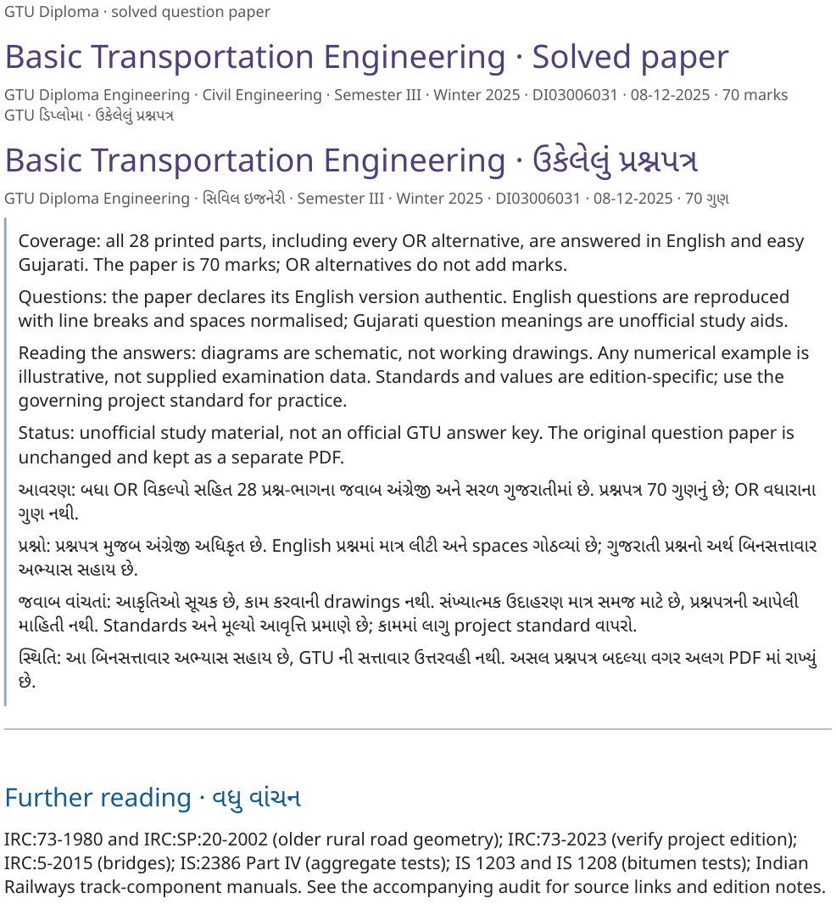
Question 1
Q1 · Harbour and road development
Q.1 (a) · Give difference between Harbour and Port. · 3 marks
A harbour is a sheltered water area where vessels can find safe anchorage or berthing. A port is a place with facilities for vessels, passengers or cargo and their commercial operations.
![Q.1 (a): preserved source formula, table or diagram, page 2. Extracted text context (formula notation may be incomplete): Point Harbour Port Main purpose Protection and shelter from waves and wind. Loading, unloading, passenger service and maritime trade. Facilities May be natural or protected by breakwaters; cargo facilities need not be present. Usually has berths, access channel, cargo / passenger and land-side facilities. Relationship A sheltered fishing cove may be a harbour without being a commercial port. A port requires safe access and sheltered operating conditions, natural or provided by works.](winter-2025.assets/0001.webp)
Example: a sheltered cove without a terminal is a harbour; a developed cargo terminal with berths is a port. Boundaries and terminology can vary locally.
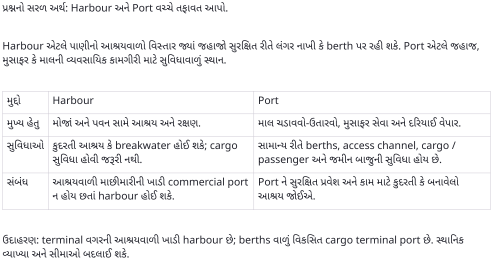
Q.1 (b) · Define following terms. (1) Obligatory point. (2) Camber. · 4 marks
Obligatory point: a location that controls a road alignment: the road should pass through it or avoid it.
• A suitable narrow river crossing, town or mountain pass may be a point to pass through.
• A religious building, costly property or unstable slope may be a point to avoid.
Camber: the transverse slope given to the road surface, normally from a higher crown toward the edges, to quickly remove rainwater.
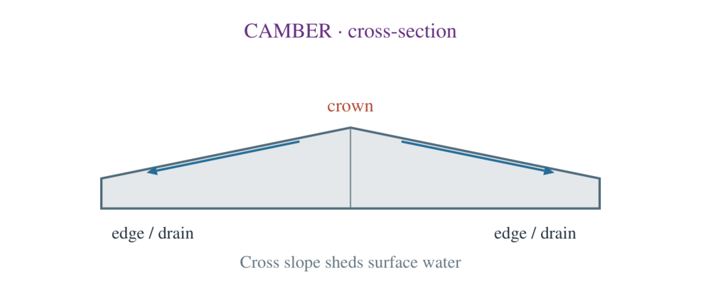
Schematic cross-section: crown is the high centre; arrows show water moving to the edge drains.
Example: a crowned two-lane road drains toward both shoulders. Excessive camber can make driving uncomfortable.
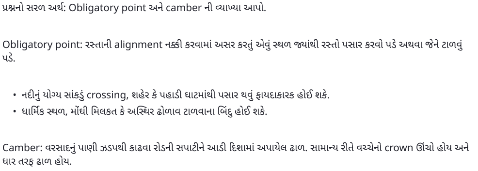
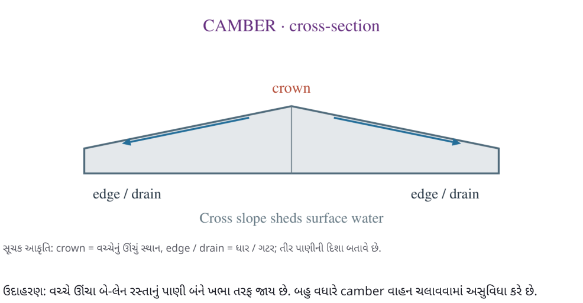
Q.1 (c) · Explain significant recommendation of Jaykar Committee. How they are implemented by the government. · 7 marks
The Indian Road Development Committee, appointed in 1927 under M. R. Jayakar, studied how India could develop a coordinated road network.
![Q.1 (c): preserved source formula, table or diagram, page 4. Extracted text context (formula notation may be incomplete): Recommendation Implementation / outcome Treat roads as a matter of national importance Central government involvement and coordination with provinces / states. Raise a dedicated road-development fund from motor-spirit taxation Central Road Fund was created in 1929; resources could support road works. Hold regular road conferences and share technical knowledge Indian Roads Congress (IRC) was established in 1934 as a technical forum. Develop road research and testing CSIR–Central Road Research Institute was established in 1952 for road research. Plan development over a long period The later Nagpur 20-year road development plan of 1943 was a coordinated planning exercise.](winter-2025.assets/0006.webp)
How it works in practice: government allocates funds and coordinates agencies, IRC publishes technical guidance, and research organisations test materials and methods. For example, a new rural road can draw on planning funds and IRC guidance.
Remember: 1927 is the committee year, not the year IRC or the fund was formed. Later plans and institutions developed over time; they were not all created in 1927.
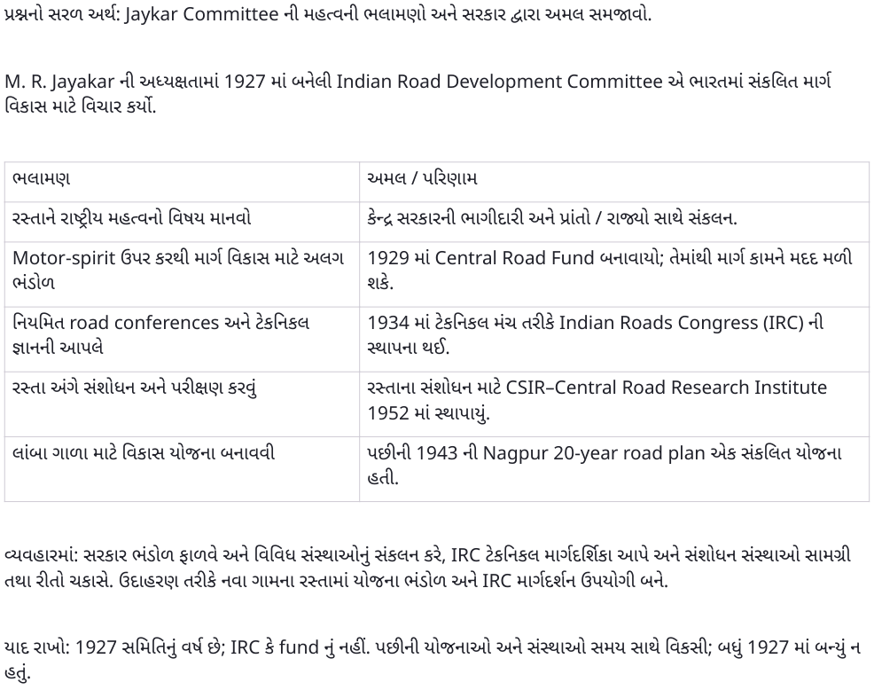
Q.1 (c) · Explain classification of roads. · OR · 7 marks
Road classification groups roads by their function, connectivity and service. The traditional non- urban functional hierarchy is:
![Q.1 (c) OR: preserved source formula, table or diagram, page 6. Extracted text context (formula notation may be incomplete): Class Main role and example National Highway (NH) Connects major national centres, state capitals, ports and strategic routes. State Highway (SH) Connects important centres within a state and joins them to NHs. Major District Road (MDR) Links district production areas and markets to district headquarters and higher roads. Other District Road (ODR) Links rural areas and smaller markets to MDRs or higher roads. Village Road (VR) Connects villages with each other and with the nearest higher-class road.](winter-2025.assets/0008.webp)
An expressway is an access-controlled, divided high-standard road; urban streets are separately classified according to their city function. A road may also be described by surface (earthen, gravel, bituminous or concrete), traffic and terrain.
Example: village → VR → ODR / MDR → SH / NH gives access to a large market. Actual road numbers and responsibilities depend on government notification; a road’s class is not determined by surface alone.
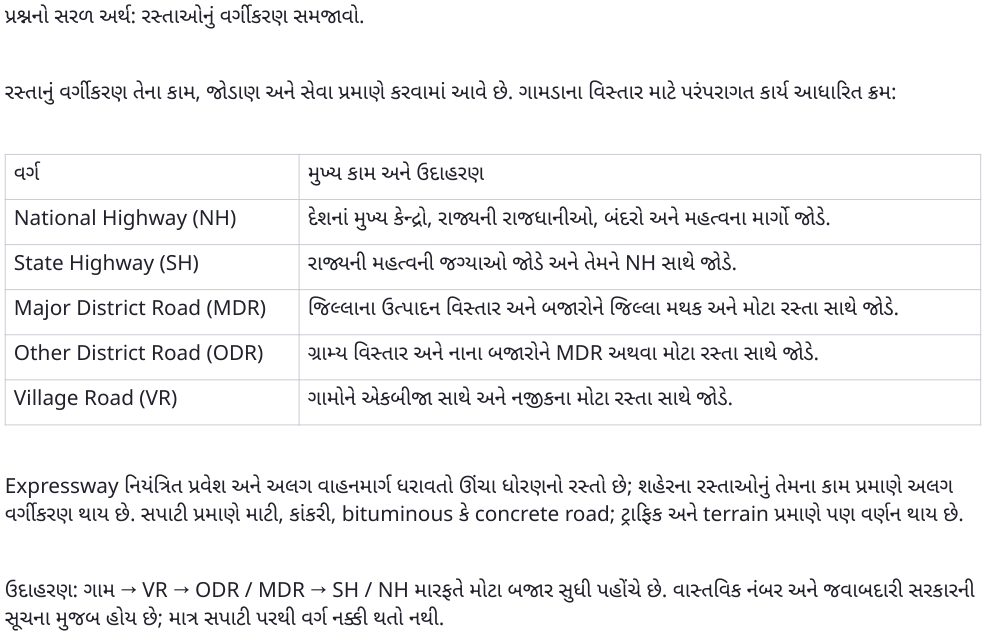
Question 2
Q2 · Road alignment, materials and testing
Q.2 (a) · Distinguish between building line and control line. · 3 marks
Building line and control line are planning limits placed beyond the road boundary to regulate roadside development.
![Q.2 (a): preserved source formula, table or diagram, page 7. Extracted text context (formula notation may be incomplete): Point Building line Control line Position Nearer the road boundary. Farther from the road boundary. Control Normally no building between road boundary and this line, subject to applicable rules. Development between building and control lines is restricted / regulated by the authority. Purpose Keeps a setback for safety and future needs. Reserves a wider controlled corridor and limits unsuitable development.](winter-2025.assets/0010.webp)
Example: a proposed roadside shop must observe both notified lines. The distances vary with road class, location and the applicable rules.
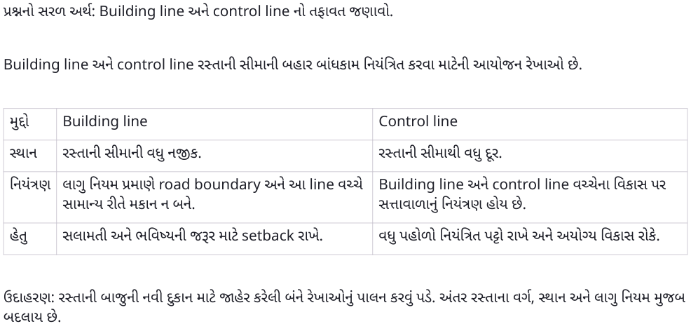
Q.2 (b) · Enlist methods of soil stabilization and Explain Electrical stabilization in detail. · 4 marks
Soil stabilization improves soil strength or reduces undesirable changes. Methods include mechanical compaction / blending, cement or lime, bitumen, chemical additives, grouting, geosynthetics and electrical treatment.
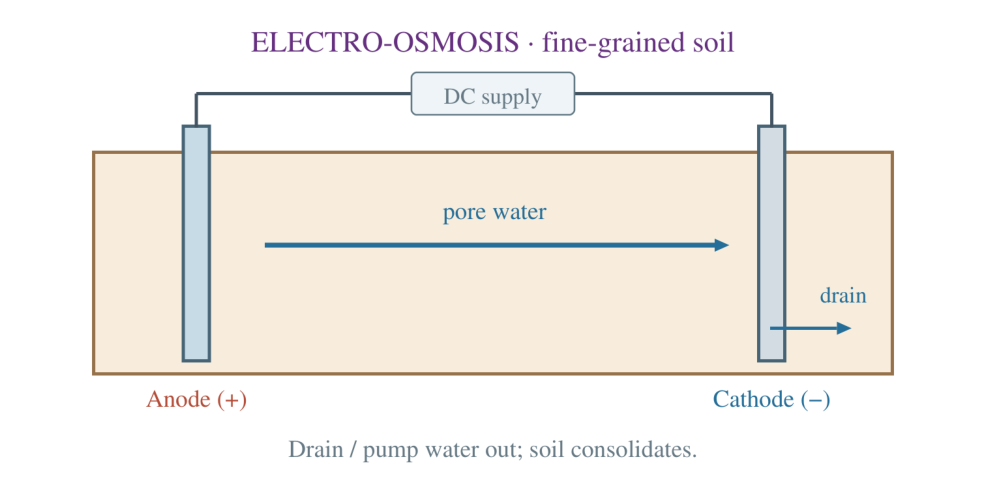
Schematic: DC supply, anode (+), cathode (−), pore-water direction and cathode drain.
Electrical method — setup and working
1. Insert electrodes in saturated fine-grained soil; connect the anode to positive and the cathode to negative DC.
2. Direct current induces electro-osmosis: pore water moves generally toward the cathode, where it is drained or pumped out.
3. Removal of water can consolidate the clay and increase its strength; monitor settlement and water discharge.
Example and limit: dewatering a soft clay foundation where ordinary drainage is slow. Power cost, electrode corrosion and soil chemistry limit its use; it is not a substitute for a proper geotechnical design.
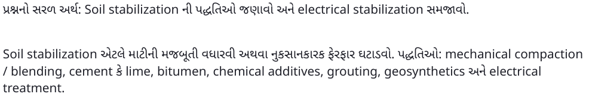
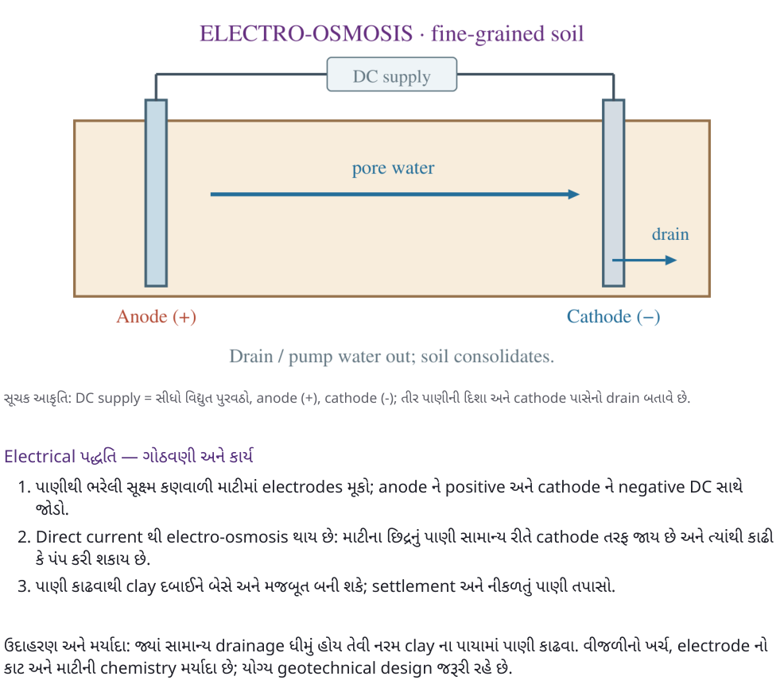
Q.2 (c) · How will you perform Aggregate crushing value test? Explain in detail. · 7 marks
The aggregate crushing value (ACV) is the percentage of fines produced by a standard gradually applied compressive load. It indicates resistance to crushing in pavement aggregate.
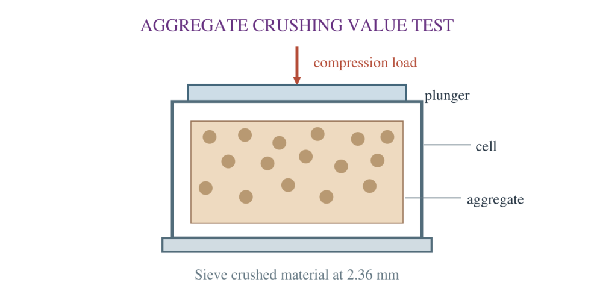
Schematic: compression load acts on the plunger over aggregate in the steel cell; fines are sieved after unloading.
Construction — apparatus and purpose
1. A 150 mm steel cylinder, base plate and freely fitting plunger contain and load the specimen.
2. A measuring cylinder and tamping rod prepare an approximately standard quantity; a compression machine applies the load.
3. 12.5 mm, 10 mm and 2.36 mm sieves and a balance select material and measure fines.
Working — step and reason
1. Select aggregate passing 12.5 mm and retained on 10 mm. Use surface-dry material; if heated dry, use 100–110 °C for no more than 4 h and cool it before testing.
2. Fill the measuring cylinder in three equal layers, tamping each 25 times; level and weigh the test portion as A.
3. Put the portion in the test cylinder in three layers, tamping each 25 times. Level it and seat the plunger without jamming.
4. Load uniformly to 40 tonne-force (approximately 392 kN, often rounded to 400 kN) in 10 min; release the load.
5. Remove all material without losing fines, sieve through 2.36 mm and weigh the passing fraction B. Repeat on a second test portion and report the mean as prescribed.
Illustration — one test portion, not data from the paper
A = 3000 g
B = 750 g

3. Calculate — ACV = 25.0%
Illustrative ACV of this portion = 25.0%
Check: fines are one quarter of the sample, so 25% is reasonable. Lower ACV generally means greater resistance to crushing. Compare the mean with the limit for the specified pavement use; test size, method and loading standard matter.
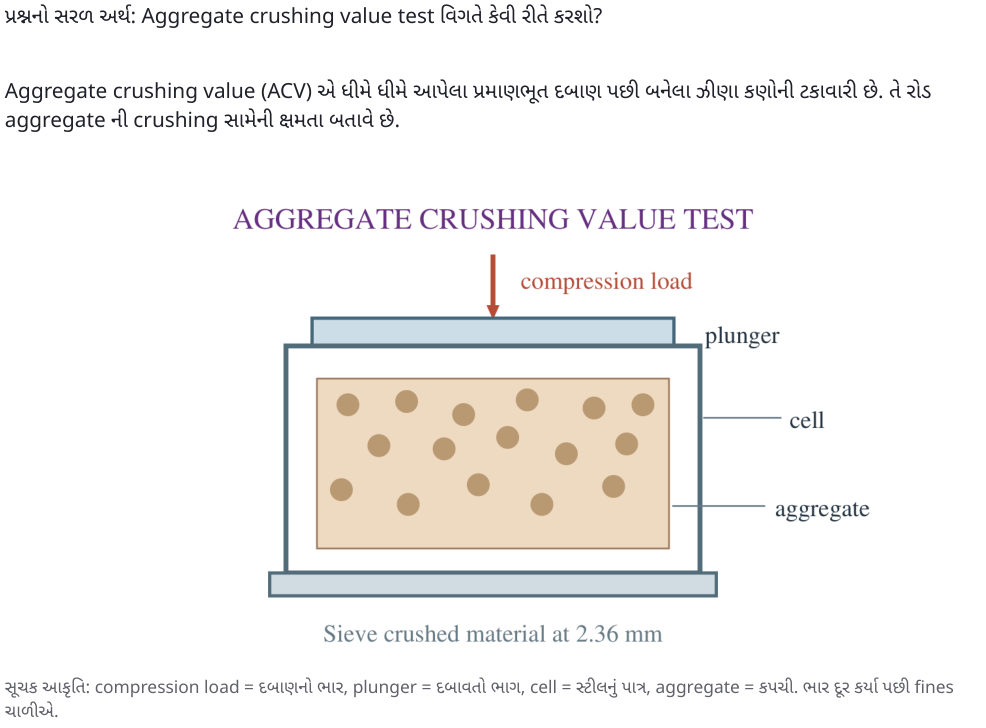

Q.2 (a) · Distinguish between Perception time and brake reaction time. · OR · 3 marks
For this comparison define the intervals explicitly:
![Q.2 (a) OR: preserved source formula, table or diagram, page 13. Extracted text context (formula notation may be incomplete): Point Perception time Brake reaction time Interval From appearance of a hazard until the driver perceives / recognises it. From recognising the need to brake until the driver begins operating the brake. Main action Seeing and recognising the obstruction. Deciding and moving the foot to the brake. Example Seeing and identifying a pedestrian. Moving the foot and starting to press the brake.](winter-2025.assets/0020.webp)
Terminology varies between texts. The common 2.5 s design value for SSD is a combined perception–reaction allowance, not 2.5 s plus another reaction time. Braking distance after application is separate.
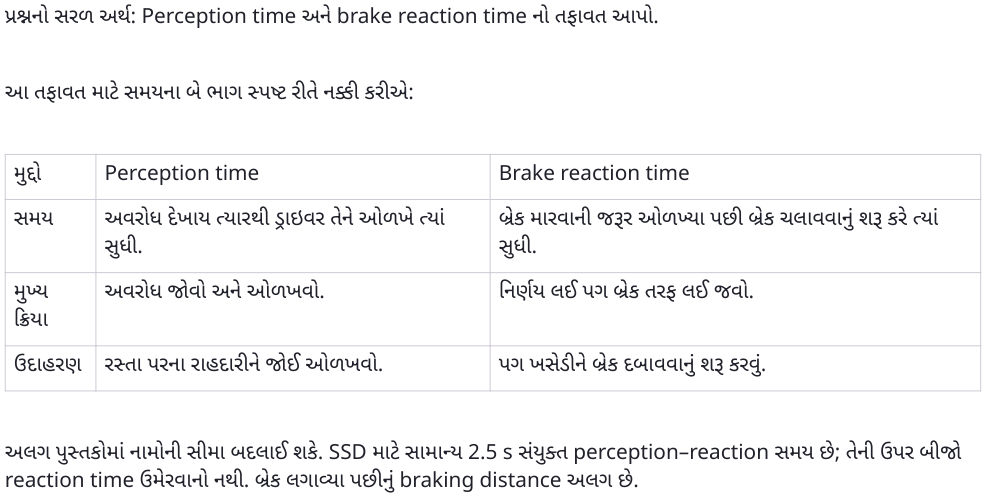
Q.2 (b) · Explain maintenance of Bituminous roads. · OR · 4 marks
Bituminous-road maintenance means timely inspection and repair to keep the surface safe and prevent water entering the layers.
• Cracks: clean and seal small cracks; investigate and repair widespread fatigue cracking.
• Potholes: cut to sound edges, clean and dry, apply tack where specified, fill with suitable mix and compact.
• Rutting, ravelling or bleeding: identify the cause; mill, patch or apply a suitable surface treatment rather than merely covering a failed base.
• Drainage and shoulders: clear drains, restore camber / edges, and maintain signs and markings.
Example: patch a small pothole before rain enters the base. Work under traffic protection; wet weather and structural failure may require a different approved repair.
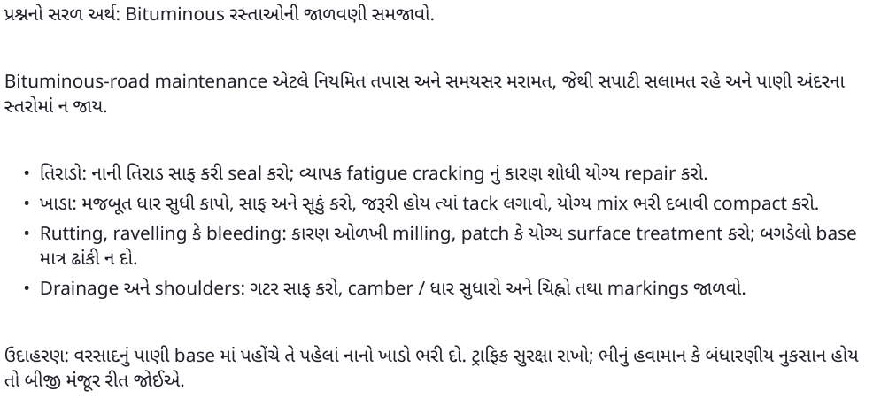
Q.2 (c) · Write step by step procedure to perform Penetration test on bitumen. · OR · 7 marks
The penetration test measures bitumen consistency by the depth a standard needle enters under specified conditions. A larger penetration generally indicates a softer binder.
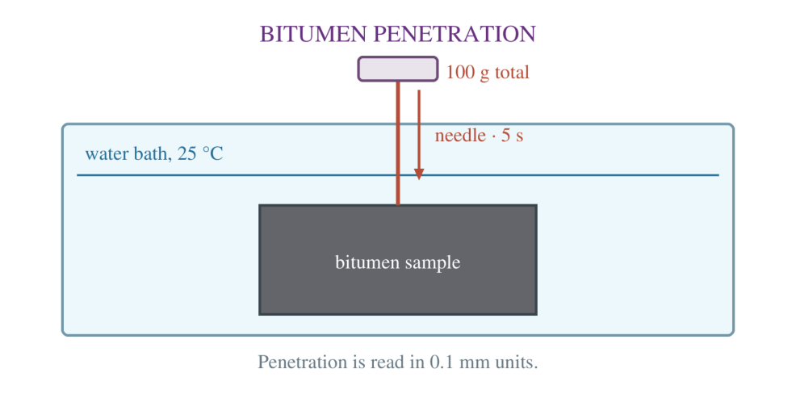
Schematic: standard needle and 100 g total load, sample cup and temperature-controlled water bath.
Construction — apparatus and purpose
1. A penetrometer holds the standard needle and total moving load; a dial measures needle movement.
2. A sample cup holds the binder and a water bath maintains the test temperature.
3. A timer and thermometer control time and temperature.
Working — step and reason
1. Heat the sample carefully until fluid, avoiding overheating; pour into a clean cup and cool under the adopted test method.
2. Condition the cup in the water bath at 25 °C under standard test conditions.
3. Bring the clean needle just into contact with the bitumen surface and set the dial to zero.
4. Apply a total moving load of 100 g and release the needle for 5 s. Record penetration in units of 0.1 mm.
5. Clean the needle and repeat at separated positions away from the edge; take the required readings, check agreement and report their mean as the method specifies.
Illustration — one reading
Needle reading = 82 penetration units
One unit = 0.1 mm
1. Calculate — Depth = 82 × 0.1 mm
2. Result — Depth = 8.2 mm
Illustrative reading = 82 units = 8.2 mm
Check and use: 82 tenths of a millimetre equals 8.2 mm. Repeatability and temperature strongly affect the result; record conditions and compare the average with the relevant binder specification, not this example.
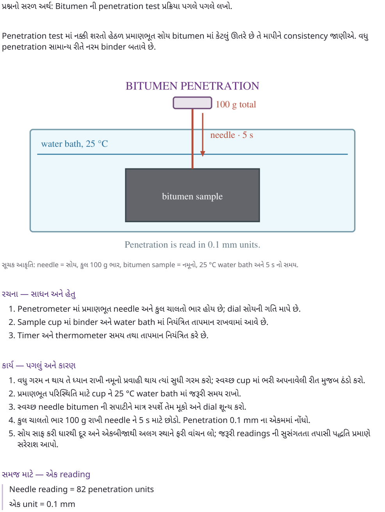
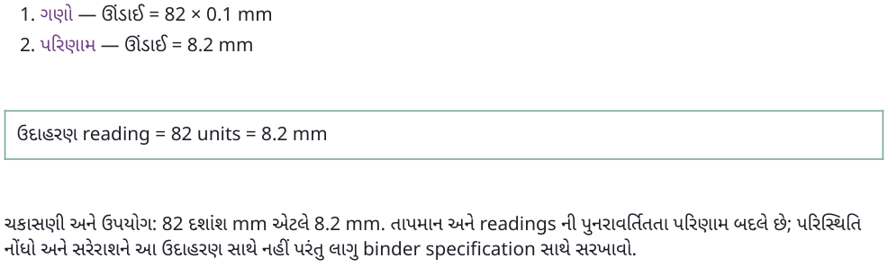
Question 3
Q3 · Subgrade, drainage and bridge works
Q.3 (a) · Give full form of CBR test.List key components of the CBR apparatus and What is the standard rate of penetrations for plunger during the CBR test? · 3 marks
CBR = California Bearing Ratio. It compares the resistance of soil to a standard plunger with that of standard crushed stone at the same penetration.
• Apparatus: cylindrical mould with base and collar, loading frame, 50 mm plunger, load measuring device and penetration dial.
• Surcharge weights simulate overburden; a soaking tank and accessories are used when a soaked test is specified.
• The standard penetration rate is 1.25 mm/min.
Example: a compacted subgrade sample may be soaked and tested to support pavement-thickness design. CBR depends on compaction, moisture and whether the test is soaked.
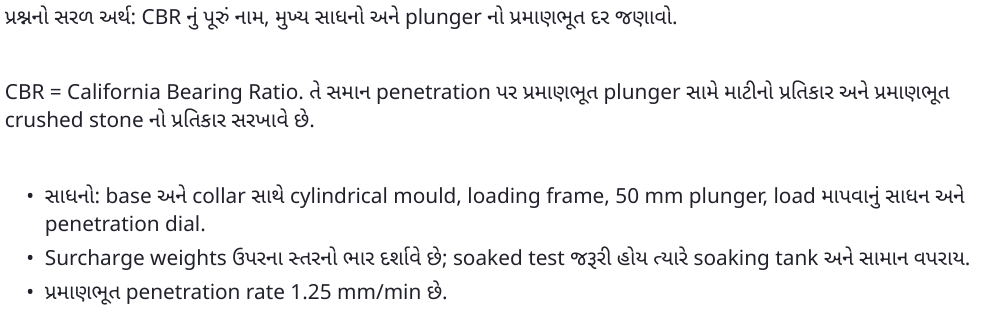
Q.3 (b) · Explain the Catch basins with neat sketch. · 4 marks
A catch basin is a roadside storm-water inlet chamber that collects runoff and retains some sediment before water enters a drain.
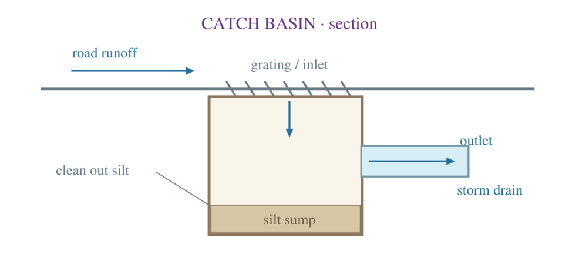
Section: road runoff enters through a grating, coarse silt settles in the sump and water leaves through the outlet to a storm drain.
1. A grating admits surface water and helps keep large debris out.
2. The chamber and low sump allow heavier silt to settle below the outlet.
3. The outlet pipe carries water to a storm drain or safe outfall.
4. An accessible cover permits removal of collected silt and cleaning.
Example: an inlet beside a kerbed road intercepts rainwater at a low point. It must be cleaned regularly; it does not remove all pollutants and can overflow if blocked.
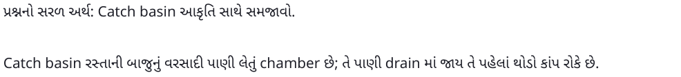
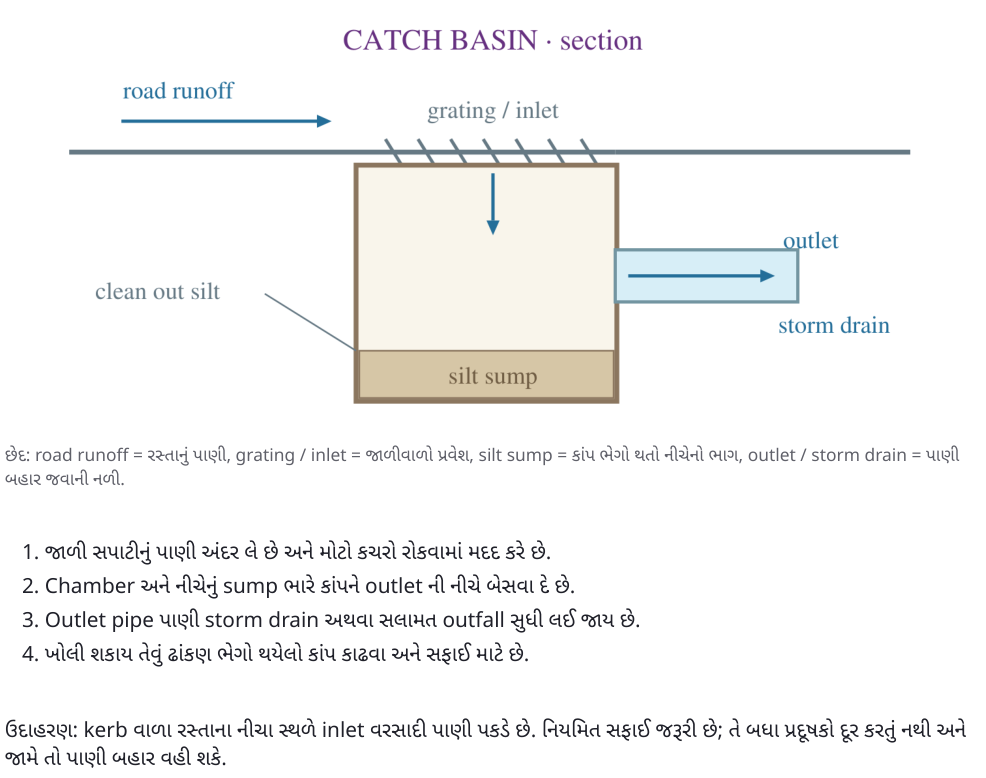
Q.3 (c) · Draw neat sketch components of a Bridge and Explain it. · 7 marks
A bridge carries a road, railway or path across an obstacle. Its superstructure carries traffic; the substructure and foundations transfer loads safely to the ground.
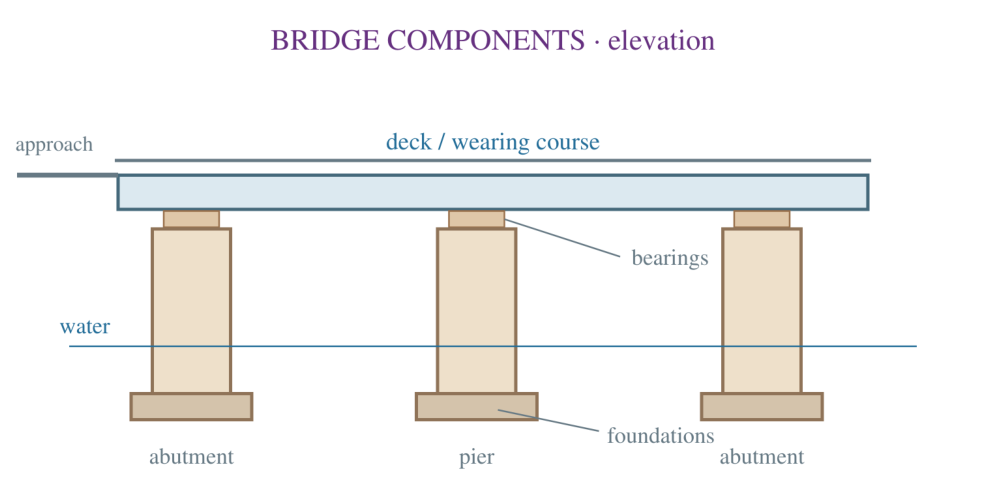
Schematic elevation: deck / wearing course, bearings, two abutments, an intermediate pier, foundations and water. Other components are described below.
Construction — part and purpose
1. Deck slab, girders and wearing course: support traffic and distribute loads along the span; the wearing course provides the running surface.
2. Bearings: transfer reactions to supports while allowing the intended rotation and / or movement.
3. Abutments: support the bridge ends and retain approach fill; piers: support intermediate spans.
4. Foundations: transfer pier and abutment loads into suitable soil or rock; type depends on site and scour.
5. Wing walls and approaches: retain approach earth and connect the road smoothly to the deck.
6. Parapets / barriers, drainage and expansion joints: protect road users, remove water and accommodate designed movement.
Load path — how it works
1. Traffic load acts on the wearing surface and deck.
2. The deck and girders carry it to bearings; bearings pass reactions to piers and abutments.
3. Foundations distribute the load to the ground; bed protection may resist scour around the supports.
Example: a two-span river bridge has one pier between its two abutments. Inspect joints, bearings and drainage and protect foundations against scour; the sketch is not a structural design.
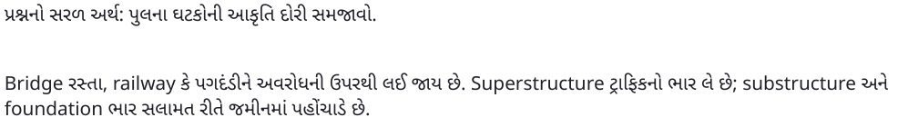
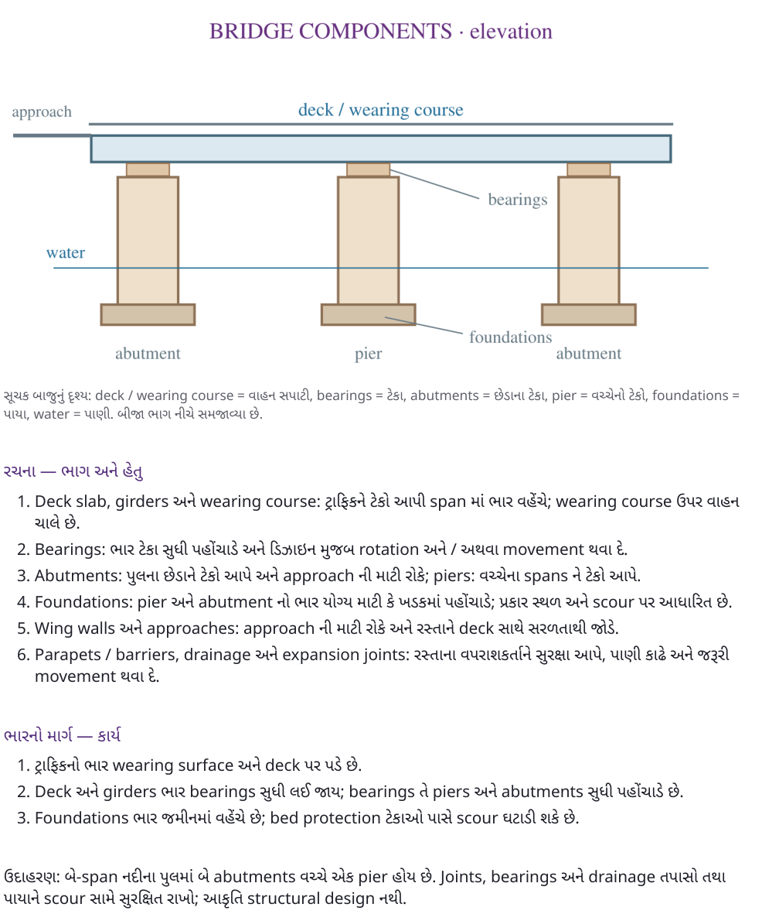
Q.3 (a) · Write importance of Road arboriculture. · OR · 3 marks
Road arboriculture is planned planting and care of trees along roads.
• Trees provide shade, improve appearance and can reduce dust and wind effects.
• Roots can help protect slopes from erosion where the species and location are suitable.
• Planting improves the roadside environment and may guide drivers along the alignment.
Example: suitable native trees outside the safe roadside clearance. Do not obstruct sight distance, signs or drains; avoid roots that damage pavement.
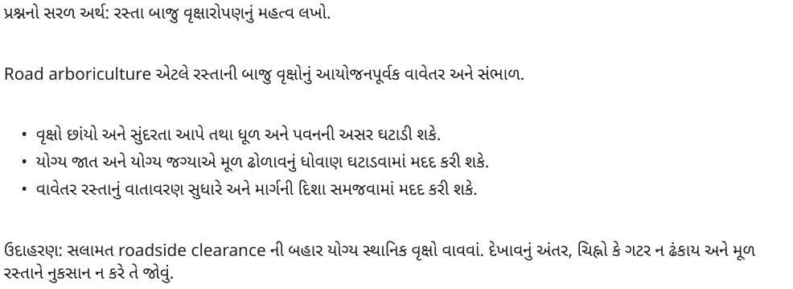
Q.3 (b) · Explain classification of Bridge according to span. · OR · 4 marks
A span is the distance between adjacent support centres; total bridge length is a different measurement. The question says “span”, but the usual IRC size classes mostly use total length.

Example: a bridge 80 m long made of four 20 m spans is major by total length, but is not a 150 m long-span bridge. Use the exact measurement definitions of the applicable code.
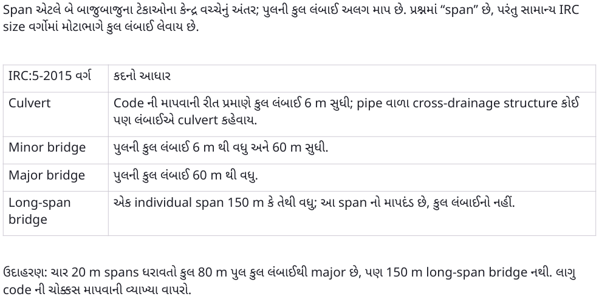
Q.3 (c) · Give detail of High-level causeway with neat sketch. · OR · 7 marks
A high-level vented causeway is a relatively raised, submersible road crossing with openings for ordinary flow. It may be overtopped in a large flood; it is not a high-level bridge above the highest flood.
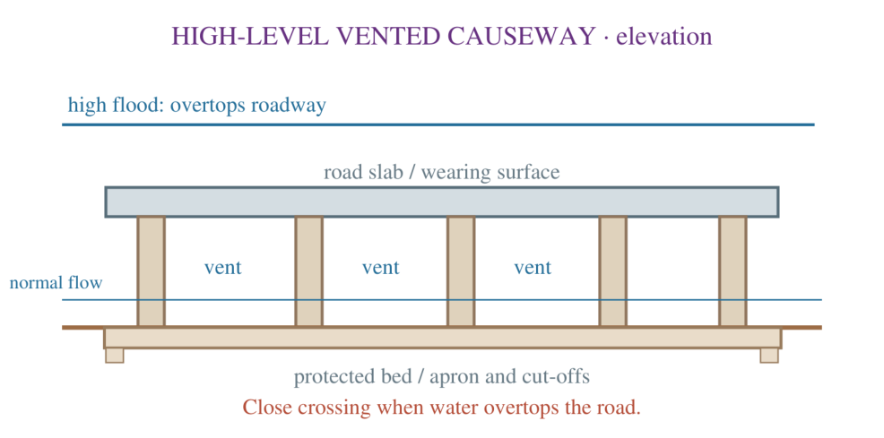
Schematic elevation: raised road slab, piers, vents, normal flow, flood level above the road, and protected bed / apron.
Construction — part and purpose
1. A raised road slab / deck and approaches carry traffic across the stream.
2. Abutments and piers support the deck; vents between them pass normal stream flow.
3. Foundations, floor or apron, cut-offs and bank protection resist scour and erosion.
4. Markers, warning signs and water-level indicators help identify the crossing during floods; provide a safe traffic closure arrangement.
Working — step and reason
1. In ordinary flow water passes through the vents and vehicles use the raised road.
2. In a large flood water can pass over the deck as well as through vents, limiting the obstruction to flow.
3. Close the crossing whenever overtopping or unsafe water depth occurs; reopen only after inspection and clearance of debris.
Example: a lightly trafficked rural stream crossing where brief interruption is acceptable. It is often less costly than a high-level bridge, but flooding interrupts service; foundations and approaches still require hydraulic and structural design.
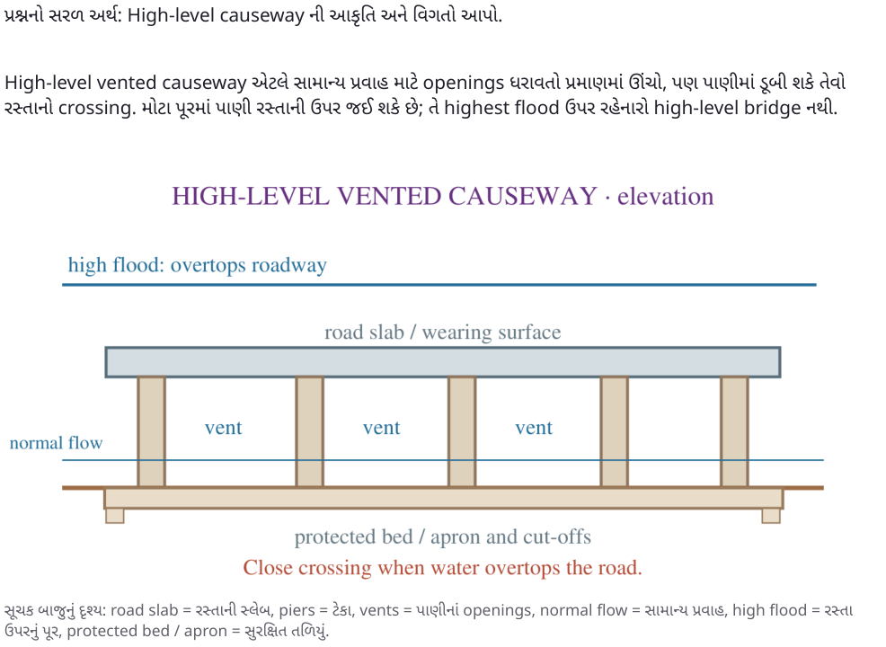
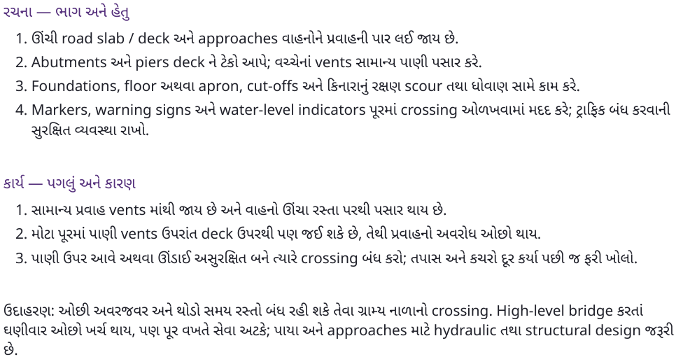
Question 4
Q4 · Drainage and railway engineering
Q.4 (a) · What is maintenance of surface and subsurface drainage system? · 3 marks
Drainage maintenance keeps surface and underground water flowing away from the road or track foundation.
• Surface: remove silt, litter and vegetation from side drains, catch basins and culverts; repair lining and restore fall to the outlet.
• Subsurface: inspect collector pipes, filter outlets and inspection chambers; flush blockages and replace damaged pipes or clogged filter material.
• Check outlets and erosion after storms; repair scour and waterlogging promptly.
Example: clear a blocked road drain before monsoon. Do not discharge water onto a neighbouring property or an unstable slope.
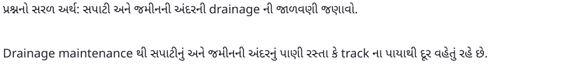
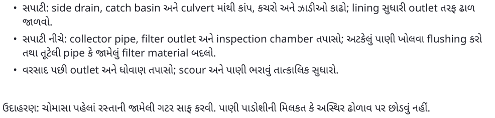
Q.4 (b) · Give basic function of rail. What are the different types of rails used in India? Mention their advantages. · 4 marks
Rails provide a smooth continuous running and guiding surface for wheels and transfer wheel loads through sleepers and ballast to the formation.
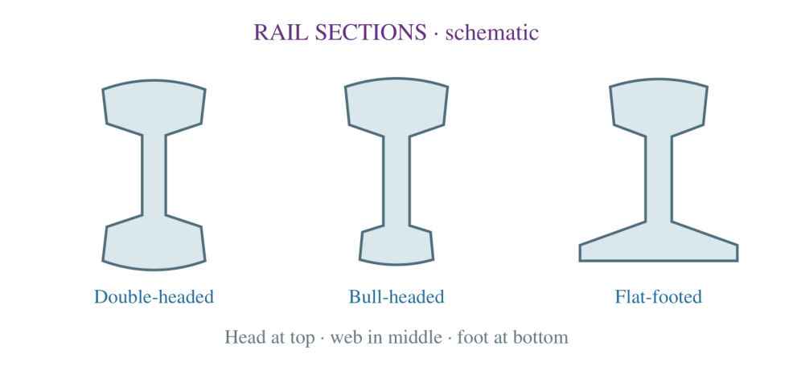
Schematic sections: double-headed, bull-headed and flat-footed rails; head, web and foot are top, middle and bottom respectively.
Section Feature / advantage and limitation
Double-headed (DH)
Nearly equal ends were intended to allow reversal; the lower table was damaged by the chair, so reversal proved impractical. Historical type.
Bull-headed (BH) Larger head provides more wearing material; a chair and key support it, adding fittings and maintenance.
Flat-footed (FF / Vignoles)
Wide base provides stable support and can be fastened to sleepers without a separate rail chair; economical and widely used on Indian Railways.
Example: a flat-footed rail is held to a PSC sleeper by elastic clips. Rail section and weight are selected for the traffic and approved track design.
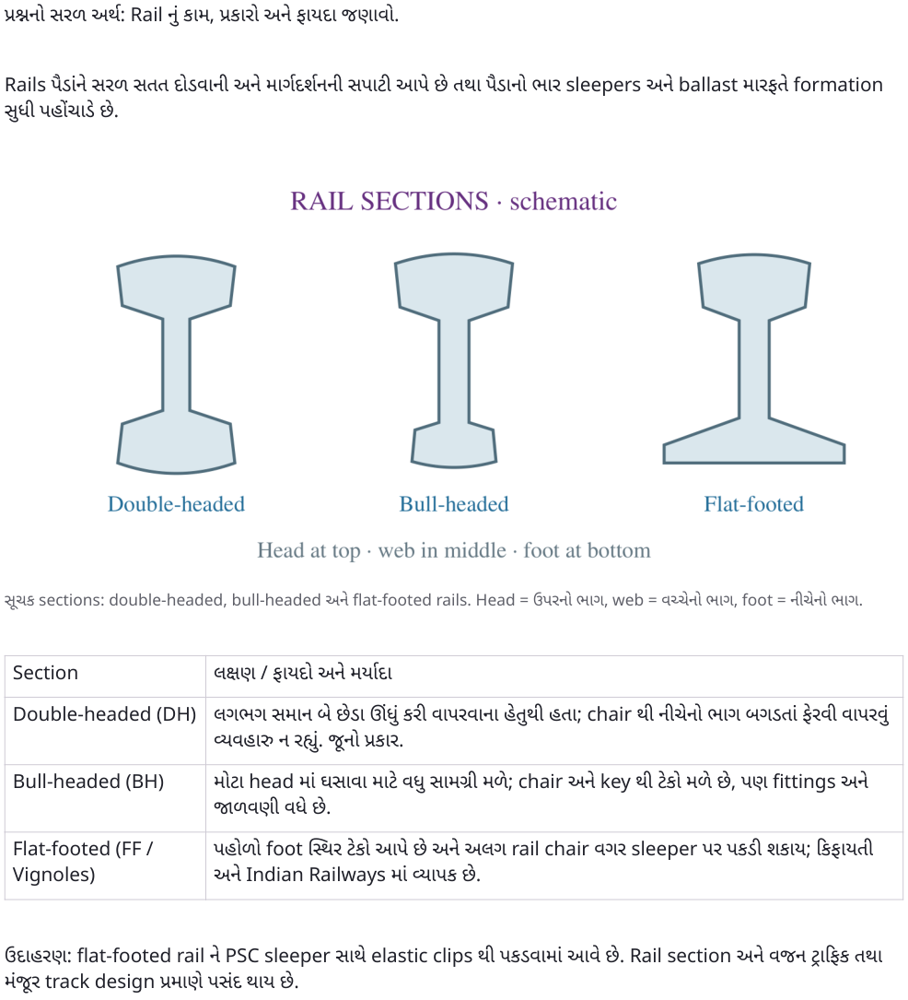
Q.4 (c) · Discuss the role of civil engineer in construction and maintenance of railway track. · 7 marks
A civil engineer in railway track work plans, constructs, inspects and maintains the permanent way so trains can run safely and reliably.
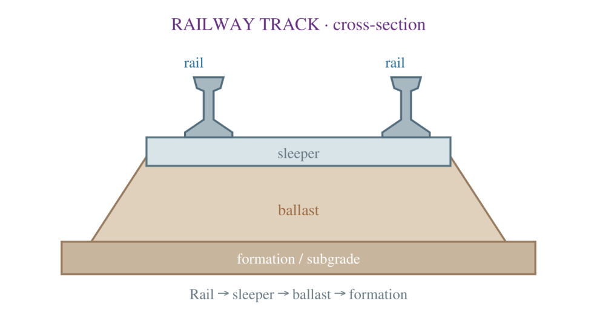
Schematic cross-section and load path: rail → sleeper → ballast → formation. Drainage is required alongside but not shown.
Construction — part and responsibility
1. Survey the alignment and levels; coordinate land, clearances, curves, gradients and approved drawings.
2. Investigate ground and build the formation, embankments / cuttings, bridges, culverts and drainage to specification.
3. Select and place suitable sleepers, ballast, rails and approved fastenings; control material quality and workmanship.
4. Lay and join / weld rails under approved procedures; check gauge, alignment, level, cant, joints and turnouts.
5. Organise labour, equipment, quantities, records and interfaces with signalling and electrical staff.
Maintenance — step and reason
1. Inspect track geometry, rails, fastenings, sleepers, ballast, points, bridges and drainage; record defects and priorities.
2. Replace defective parts, correct alignment and levels, tamp or renew ballast, clear drains and protect against erosion.
3. Plan monsoon and emergency patrols; impose approved protection or speed restrictions where defects threaten safety and coordinate with train control.
Example: after heavy rain an engineer checks a washout, protects the line, repairs the formation and restores traffic only under the railway’s rules. Construction or repairs must not bypass authorised blocks, inspections or safety procedures.
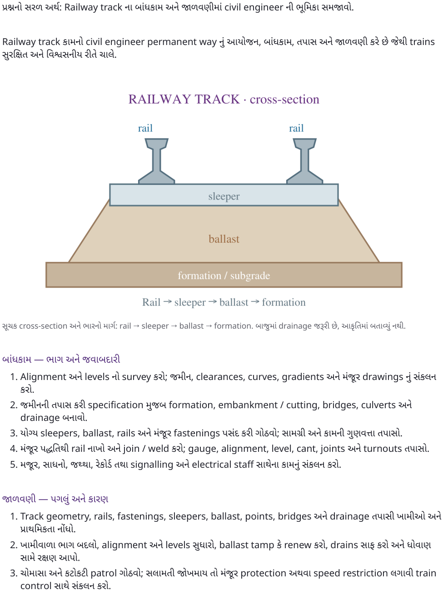
Q.4 (a) · What is bearing in Bridge? Write purpose of it. · OR · 3 marks
A bridge bearing is a device between the superstructure and its pier or abutment that transfers the support reaction.
• It distributes load onto the support and accommodates the rotations intended by the design.
• An expansion bearing also allows the designed movement from temperature and other effects; a fixed bearing restrains translation as designed.
• Correct movement reduces unwanted restraint and damage in the deck and supports.
Example: an elastomeric expansion bearing accommodates small end movement of a bridge. Bearings must be inspected and kept functional.
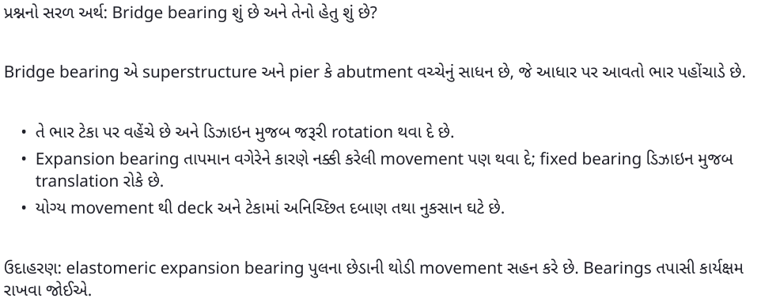
Q.4 (b) · Explain types of crossing in railway. · OR · 4 marks
A railway crossing is the arrangement at intersecting rails that provides a flangeway so wheel flanges can pass across the other rail.
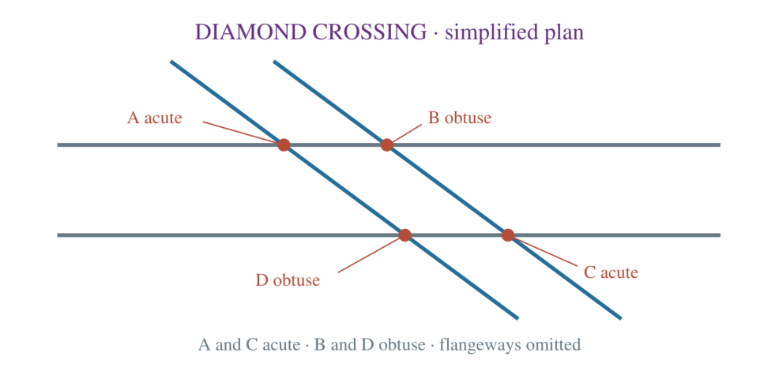
Simplified diamond plan: two acute and two obtuse rail intersections. Flangeway and check-rail details are omitted.

Example: an ordinary oblique diamond has two acute and two obtuse crossings. A crossing is not a switch: points choose a route, while the crossing provides passage across intersecting rails.
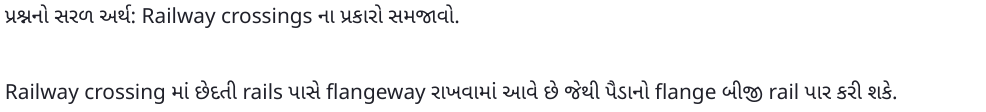
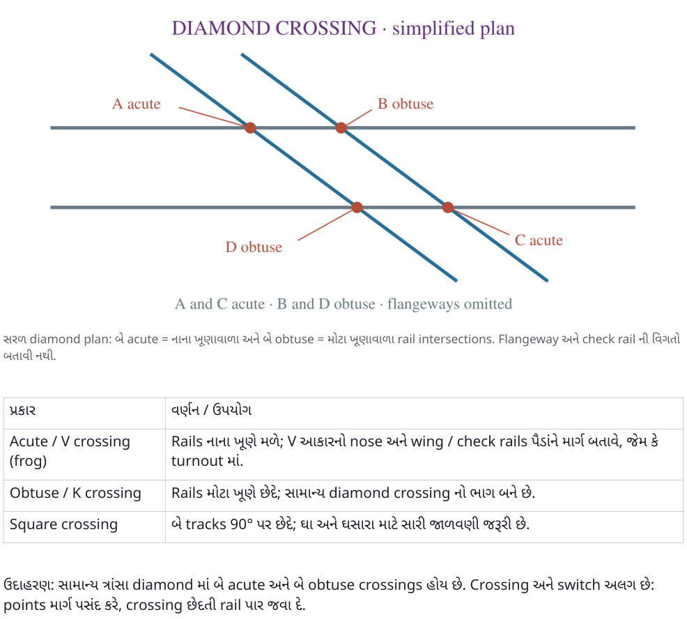
Q.4 (c) · State types of yards. Explain function of Goods yard and Marshalling yard. · OR · 7 marks
A railway yard is a group of tracks and facilities where trains or vehicles are received, sorted, serviced or dispatched without obstructing the main line.
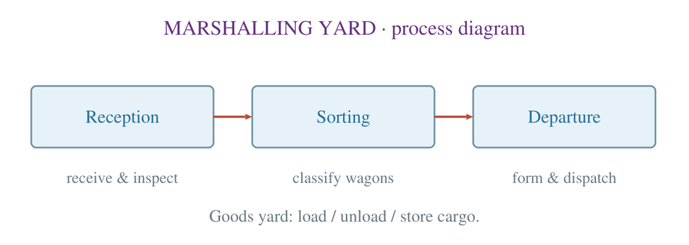
Process diagram of a marshalling yard; a goods yard serves loading, unloading and storage. It is not a track-layout drawing.
Types: passenger / coaching, goods, marshalling, locomotive and carriage / wagon maintenance yards.
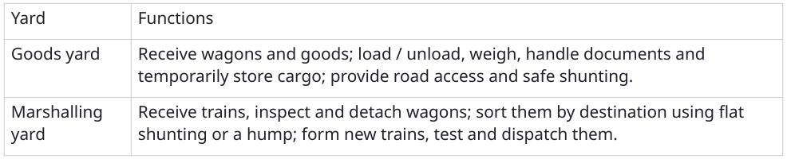
Working — examples
1. At a goods yard, a wagon is placed beside a loading platform and goods are loaded or unloaded under safety rules.
2. At a marshalling yard, the arrival group receives a train, sorting tracks group wagons by destination, and the departure group forms and dispatches the new train.
3. Keep staff clear of moving wagons; use authorised signalling, braking, shunting and inspection procedures.
Difference: a goods yard primarily handles cargo; a marshalling yard primarily sorts vehicles. Some stations combine functions, but the layout and operations depend on traffic and available land.
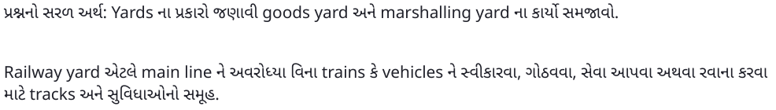
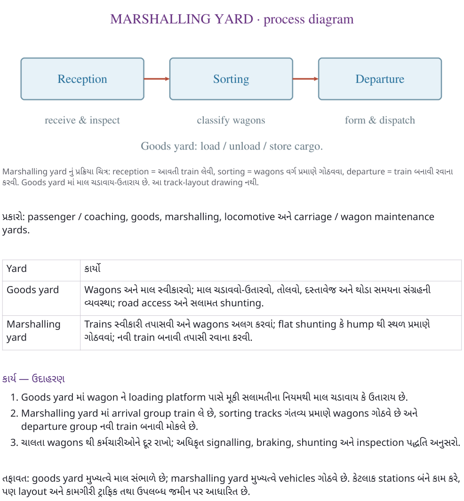
Question 5
Q5 · Harbours and airports
Q.5 (a) · What is Natural Harbour and Artificial Harbour · 3 marks
A natural harbour obtains most wave protection from geographical features such as a bay, headlands or islands. An artificial harbour obtains essential shelter from constructed works such as breakwaters.
• A natural harbour may still need dredging, berths and navigation aids.
• An artificial harbour can be created or improved on a less protected coast but requires construction and maintenance.
Example: a sheltered bay is natural; an exposed coast enclosed by breakwaters is artificial. Real harbours often combine natural and artificial protection.
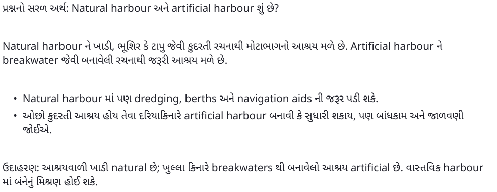
Q.5 (b) · Why breakwater is required? Explain any one in detail. · 4 marks
A breakwater protects a harbour basin and vessels by reducing incoming wave energy and providing calmer water for berthing and cargo operations.
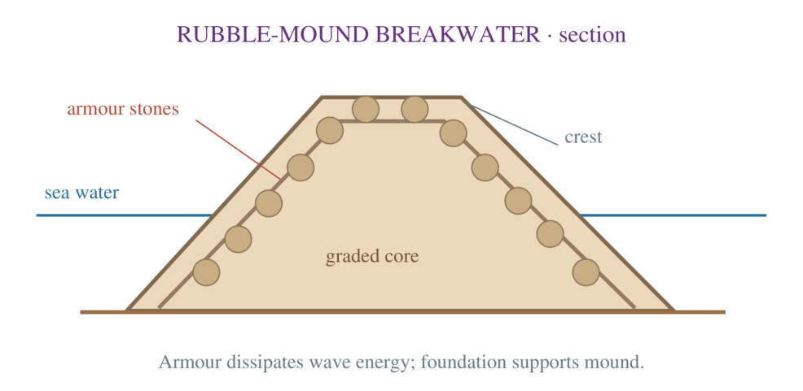
Rubble-mound section: armour stones, graded core, crest and seabed. The arrangement is schematic.
Rubble-mound breakwater — construction and working
1. Prepare a stable foundation and place a graded rubble core on the seabed.
2. Add filter / underlayers and large armour stones or designed concrete units on the exposed slope; protect the toe and provide a suitable crest.
3. Incoming waves break and lose energy through the rough porous slope, leaving relatively calmer water on the sheltered side.
Example and limit: a mound can shelter a fishing harbour. Waves can still overtop it; armour, settlement, toe scour and environmental effects need design and inspection.
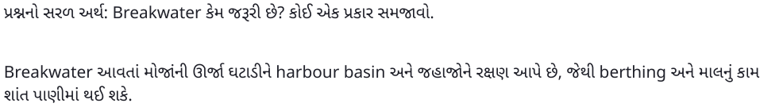
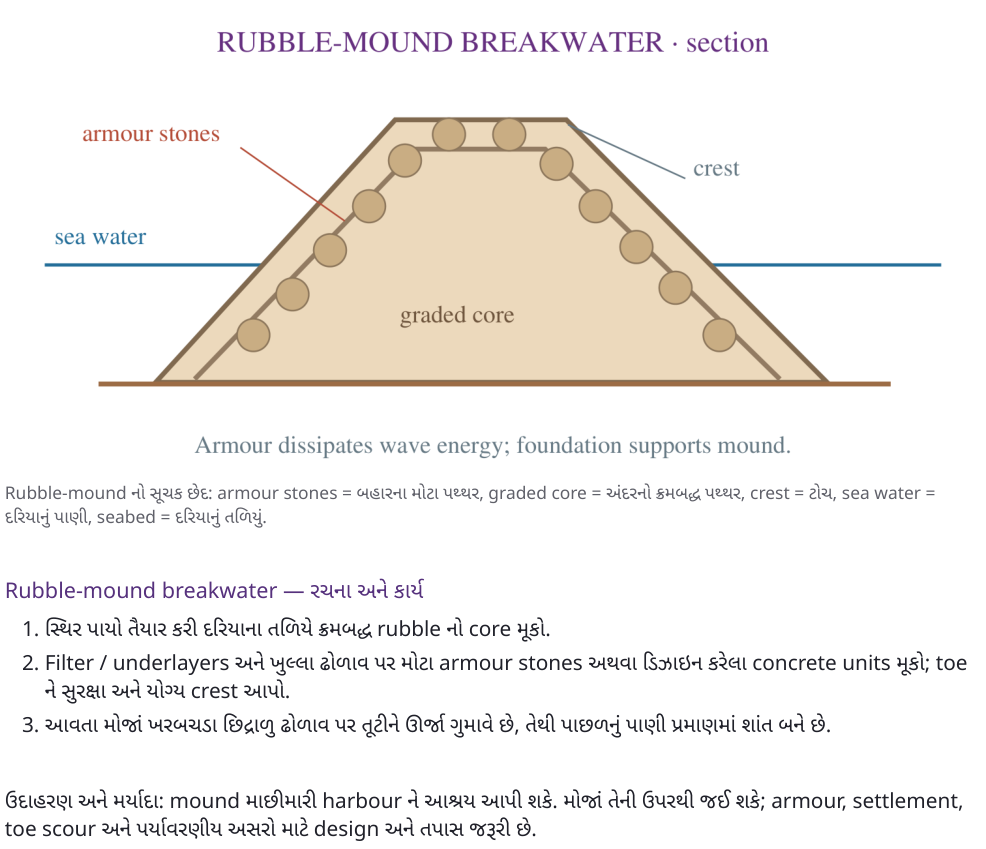
Q.5 (c) · Draw neat sketch of various components of Harbour, Explain Wharf, jetty, and approach channel. · 7 marks
A harbour provides sheltered water and access for vessels. Its layout combines protected water, navigation and berthing facilities.
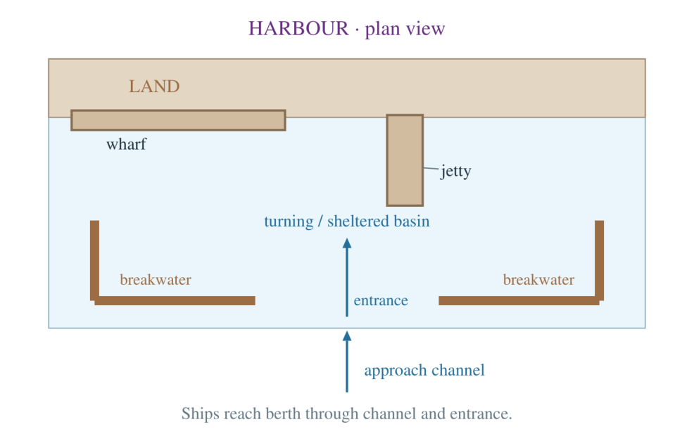
Plan, not to scale: breakwaters protect the basin; the approach channel leads through the entrance to wharf and jetty.
Components — part and purpose
1. Approach channel: a marked, navigable water route from open water to the harbour entrance. Its depth, width, alignment and maintenance must suit design vessels and tides.
2. Entrance and basin: the entrance gives safe access; the basin provides sheltered manoeuvring, turning and anchorage.
3. Breakwaters: reduce wave action at the entrance and inside the basin.
4. Wharf: a berthing platform generally alongside and roughly parallel to the shore, where vessels load or unload.
5. Jetty: a structure projecting from shore into water to reach a berth or channel; it can also serve other functions depending on its design.
6. Supporting works: berths, fenders, mooring bollards, cargo storage, road / rail access, lights and navigation aids.
Working — vessel movement
1. A vessel follows the marked approach channel and enters between the breakwaters.
2. It turns in the sheltered basin and proceeds to a wharf or jetty berth.
3. Mooring lines secure it and fenders absorb contact while passengers or cargo are handled.
Example: a cargo vessel berths at a shore-parallel wharf after entering through the channel. Depth, wave climate and maintenance govern actual harbour layout; the sketch is not to scale.
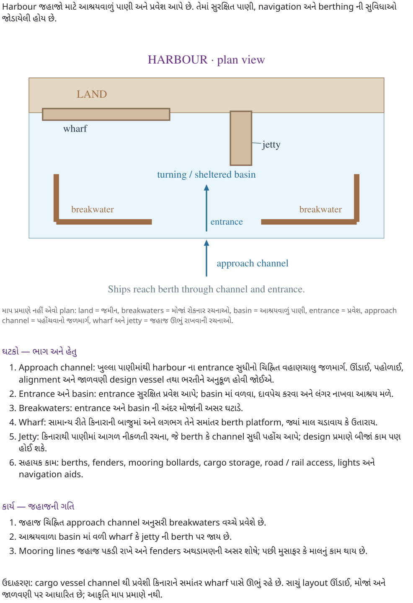
Q.5 (a) · Which facilities required at airport terminal building. · OR · 3 marks
An airport terminal building connects passengers and baggage between ground transport and aircraft.
• Entrance, ticket / information counters and check-in with baggage drop.
• Security screening, departure waiting area, gates and boarding arrangements.
• Arrivals hall, baggage claim, toilets, drinking water and accessible facilities.
• Immigration and customs where international operations require them; safe exits and ground- transport access.
Example: a departing passenger checks in, passes security and waits at a gate. Size and facilities depend on traffic and operation.
Q.5 (b) · Enlist factors affecting Airport site selection and explain any two. · OR · 4 marks
Airport site selection chooses land that can safely accommodate the airfield and its future operations.
• Factors: regional demand and access; adequate land and expansion; wind direction and weather; approach obstacles and airspace; terrain, soil and drainage; environmental / noise impacts; utilities and cost.
Any two factors explained
1. Wind and weather: prevailing winds influence runway orientation; fog, rainfall and visibility affect operational reliability.
2. Obstacles and airspace: nearby hills, towers and other airports can interfere with safe approach and departure; examine protected surfaces and airspace.
Example and limit: a level site near users may still be unsuitable if an approach is obstructed. Selection requires surveys, environmental assessment and aviation-authority approval.
Q.5 (c) · Explain with neat sketch Minimum turning radius of Aircraft. · OR · 7 marks
Minimum aircraft ground-turning radius is the radius of a specified point’s path in the tightest permitted ground turn. Different points — wheels, wingtip, nose and tail — trace different radii.
Idealised plan: O = turn centre, M = midpoint of main axle, N = nose wheel; L = wheelbase, t = main-wheel track, β = nose-wheel steering angle. Not to scale.
Assumptions and geometry
• Slow planar turn, nose-wheel steering, rigid wheelbase, fixed main axle, no tyre side-slip and 0° < β < 90°. The maximum permitted β gives the smallest radius for this model.
• O lies on the extension of the main axle and on a line through N perpendicular to the steered nose wheel. OM is perpendicular to the aircraft centre line MN.
M along the axle.
Derivation — one relation per line
2. Main-axle centre — Rₘ = L cot β
3. Nose-wheel path — Rₙ = √(Rₘ² + L²)
Check: larger steering angle gives smaller Rₘ; all radii have length units. No wheelbase, track or steering angle is given in the paper, so no numerical radius can be calculated.
Design limit: the outer main-wheel radius is not necessarily the largest wheel-path radius (compare Rₙ), nor is it the wingtip / nose / tail swept clearance. Use the manufacturer’s approved turning templates and required safety clearances for taxiway, apron and 180° manoeuvres; real steering, tyre slip and multiple gear can change the result.